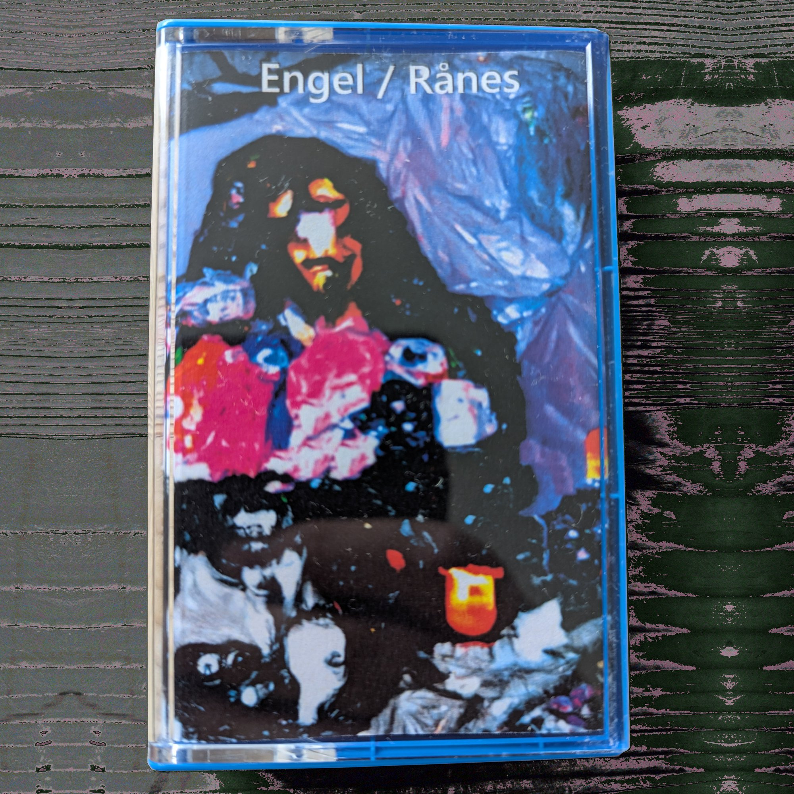

Duo
Engel/Rånes
Second Hand Jesus - Improvisasjoner med Jonas Engel på saksofon.
Andre utgivelser, samarbeid og prosjekter
Second Hand Jesus - Improvisasjoner med Jonas Engel på saksofon.

Live at Absolute Music #18 - Improviserende trio.